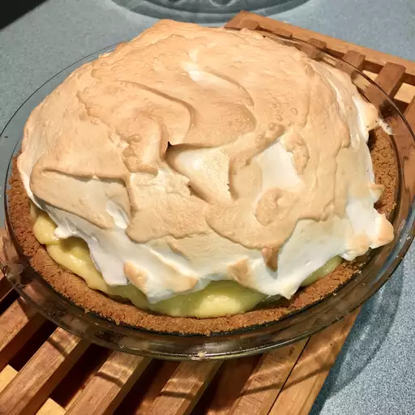

Banana Cream Pie

This banana cream pie is made with homemade pudding. It is one of the yummiest desserts on earth!
Ingredients
- 2 tablespoons vegetable oil
- 2 pounds venison stew meat
- 3 onions, chopped
- 2 cloves garlic, minced
- 1 tablespoon Worcestershire sauce
- 1 bay leaf
- 1/2 teaspoon dried oregano
- 1 tablespoon salt
- 3 cups water
- 7 small potatoes, peeled
- 1 pound carrots
- 1/4 cup all-purpose flower
- 1/4 cup water
Directions
- Brown meat n a large heavy pot over medium heat.
- Add onions, garlic, Worcestershire sauce, bay leaf, oregano, salt and water.
- Simmer, covered, for 1 1/2 to 2 hours, or until meat is tender.
- Add potatoes and carrots, cook until tender.
- Combine flour and water, stir into stew.
- Remove bay leaf before serving.